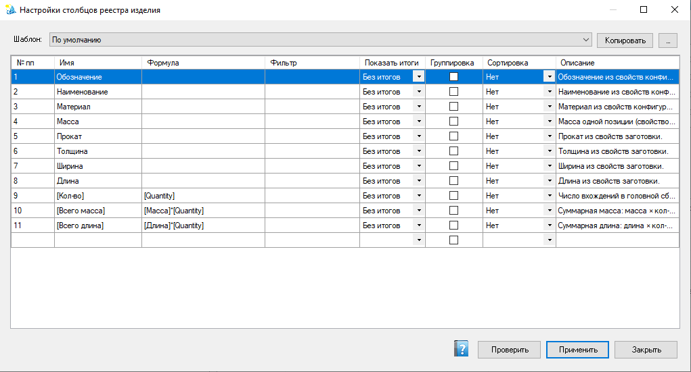

Настройки столбцов реестра изделия
Редактирование шаблона столбцов таблицы реестра изделия: имя, формула, фильтр по умолчанию, итоги, группировка и сортировка. Шаблон влияет и на HTML-отчёт.
Как открыть
В реестре изделия — кнопка … рядом с выбором шаблона столбцов.

Шаблон столбцов: имя, формула (например [Macca]*[Quantity]), итоги, группировка, сортировка и описание. Кнопки Проверить / Применить / Закрыть.
Сетка столбцов
| Поле | Смысл |
|---|---|
| № пп | Порядок столбца в таблице и отчёте. Для изменения порядка просто измените номер на нужный, строки автоматически перестроятся. |
| Имя | Заголовок столбца. |
| Формула | Выражение для значения ячейки; готовые фрагменты — в окне «Подстановки формулы». |
| Фильтр | Стартовое/связанное условие отбора для столбца. |
| Показать итоги | Min / Max / Avg / Sum в подвале таблицы. |
| Группировка | Группы строк в HTML-отчёте. |
| Сортировка | Порядок строк в таблице. |
| Показать в списке | Флажок: если установлен — столбец отображается в списке и в HTML-отчёте; если снят — столбец скрыт из списка и отчёта, но фильтр по нему работает. Удобно для служебных полей. |
| Описание | Пояснение для оператора (подсказка). |
ПКМ по ячейке в столбце № пп открывает меню «Вверх» / «Вниз» для перемещения строки.
Действия
- Проверить — проверка формул и настроек без закрытия окна.
- Применить — сохранить шаблон и обновить реестр.
- Закрыть — выход.
- Копировать / управление шаблонами — справочник «Шаблоны столбцов» (создать копию, переименовать и т.п.).
В формулах часто используют
[Кол-во] / [Quantity], имя файла ([ИмяФайла] / [FileName]) и функции вроде Round. Откройте «Подстановки формулы», чтобы вставить фрагменты без ошибок набора.
Где хранятся шаблоны
%ProgramData%\VELUM\AssemblyRegistry (и связанный последний выбранный шаблон в Settings).